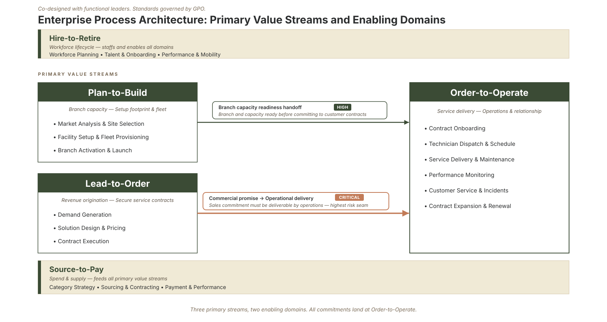

Part 2 of the "How Would You Build It?" series · by Jeffrey Benson
When people hear "Global Process Owner," they usually picture an empire: a big team, a big budget, authority over how a whole slice of the company runs. That picture is wrong, and getting it wrong is how the role fails.
Let me be precise about what a GPO is, and what it isn't.
Authority
Ownership without ownership
A Global Process Owner does not own the people, the budget, or the execution of a domain. At Meridian Field Services, the branch managers still run the branches. The sales leaders still close the deals. The procurement team still cuts the purchase orders. None of that moves under the GPO.
What the GPO owns is narrower and, in a way, harder: the standards, the handoffs, and the performance measures that govern how work flows through a domain from end to end.
Process ownership is not the same as operational ownership. I own the architecture; the functional leaders own the execution. The moment that line blurs, the moment a process owner starts trying to run the work instead of govern how it flows, the function gets resented and quietly routed around. Holding that boundary is not a limitation of the role. It is the role.
Structure
Domains are value chains, not departments
The second thing people get wrong: they treat the five domains as if they were departments. They aren't. They're value chains that cut sideways across the org chart.
Take Lead-to-Order at Meridian. Where does it live? Not in one box. It runs through marketing (the lead), sales (the qualification), a solutions engineer (the technical scope), finance (the pricing), and legal (the contract), before it ever hands off to operations. No single department owns it. That's exactly why it needs a process owner: someone accountable for the whole chain, not any one link.
This is the mental shift the role demands. An org chart is vertical; value flows horizontally. The GPO's job is to see and govern the horizontal flow that the vertical chart was never designed to show.
Methodology
You have to decompose it to see it
You can't govern a value chain you can't see in detail, so the first real work is decomposition: breaking each domain down from the whole chain (call it L0) into its major activities (L1) and then into the sub-processes where the work actually happens (L2).
This is the method I've walked through, step by step, in my How to See the Forest and the Trees series, so I won't repeat the mechanics here. The point for this discussion is what decomposition gives you: a shared map. For Meridian's Plan-to-Build domain, that map runs from site selection and feasibility, through design standards and permitting, into construction oversight, and out through commissioning and the turnover to operations. Each of those is an L1 activity with its own sub-processes, its own handoffs, and its own places where value either compounds or leaks.
Until that map exists, every conversation about "our process" is really five different conversations, because five people picture five different things. The map is what makes the domain governable.

Process Taxonomy: Decomposing enterprise value chains (L0) into discrete activities (L1) and sub-processes (L2) to establish clear ownership boundaries.
Adoption
Why the boundary protects you
There's a failure mode every process function has to design against: becoming a bureaucratic standards body that functional leaders comply with on paper and ignore in practice. Once that happens, the function is dead; it just doesn't know it yet.
The boundary I described, owning the architecture and not the execution, is the antidote, because it forces the function to earn its authority rather than assert it. When you don't command the work, the only way your standards get adopted is if they're genuinely useful: faster, clearer, less painful than what people were doing before. That keeps the function honest. Authority that comes from a mandate erodes the first time someone tests it. Authority that comes from usefulness compounds.
So the GPO's real currency is velocity, credibility, and proof of value, delivered fast. I'll spend all of Part 5 on the operating principles that make that real.
Taxonomy
The five domains as an example, not a template
A quick caution about the five domains themselves: Plan-to-Build, Lead-to-Order, Order-to-Operate, Source-to-Pay, and Hire-to-Retire. For a company like Meridian, that taxonomy fits well. For yours, it might not, and that's fine. The domains are an example of an end-to-end taxonomy, not a universal answer. Here's the Meridian read, briefly, so the shape is concrete:
- Plan-to-Build is the capacity engine: opening branches and standing up service capability. The largest capital, the largest unmanaged risk.
- Lead-to-Order is revenue origination: how a prospect becomes a signed, priced, deliverable contract.
- Order-to-Operate is delivery and lifecycle service, the domain most directly tied to customer experience and retention.
- Source-to-Pay is everything from category strategy through procurement to payment, spanning both big equipment buys and high-frequency operational supply.
- Hire-to-Retire is the workforce lifecycle, which at a skilled-trades company is a competitive constraint, not a back-office function.
The exercise for any company is the same: name the handful of end-to-end value chains that actually carry the business, and resist the urge to make them match the org chart.
Tooling
A note on building it to last
When I decompose a domain, I don't want the result living in a static diagram that's wrong the day after it's drawn. I want it structured: every activity, every handoff, every measure captured as data, so the model stays alive as the business changes. That's the tool I'm building alongside this series (working name: Forester), and it's why decomposition, for me, is the entry point to instrumentation rather than the end of the exercise. More on that as the series goes on.
Here's a question worth sitting with: in your organization, what's a process that everyone technically owns a piece of, and therefore no one owns end to end? Those orphaned value chains are where a process function earns its keep, and they're almost never the ones on the org chart. I'd like to hear which one came to mind.
Next in the series: Part 3, on the single most valuable idea in this whole body of work, which is that value doesn't leak inside the boxes. It leaks at the seams between them.
Sources: Independent research on Process Excellence and Global Process Ownership (GPO) framework deployments. Practical applications of standard work, organizational design, and continuous improvement metrics in high-growth rollups.